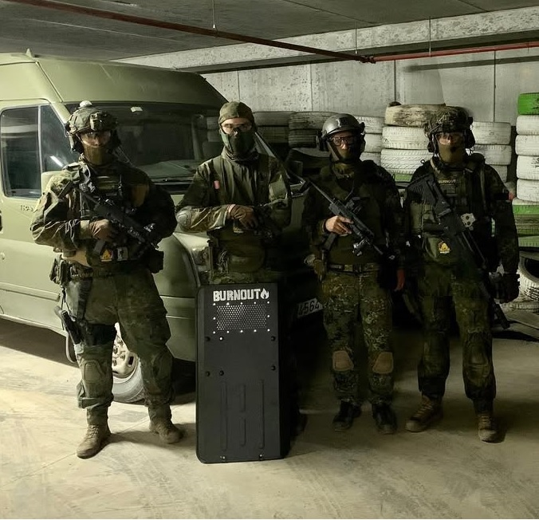

Quienes somos?

Bienvenidos a Burnout Airsoft Todo comenzó en los pasillos del instituto. Éramos un grupo de amigos que, tras clase, se refugiaba en partidas online y charlas interminables sobre nuestras pequeñas batallas. Aquellos momentos nos ayudaban a desconectar del estrés de los estudios… hasta que llegó un punto en el que ni eso era suficiente. Nos faltaba tiempo, energía y empezábamos a “quemarnos”. Fue entonces cuando dimos con un nombre que nos definía a la perfección: Burnout. Ese síndrome que sentimos todos alguna vez, pero que también nos empujó a buscar algo más allá de las pantallas. Pasaron los años, cada uno siguió su camino, pero el grupo nunca se rompió. Seguíamos quedando, aunque fuera a ratitos, para reconectar y mantener viva esa chispa que nos unía. Y entonces, en el cumpleaños de Joma, decidimos probar algo nuevo: Airsoft. Lo que empezó como una partida de alquiler se convirtió en una nueva pasión. Desde entonces, hemos cambiado los mandos por réplicas, y los cascos por máscaras. Nos hemos ido haciendo un hueco en esta comunidad increíble, conociendo a gente que ya forma parte de nuestra historia. Gracias a todos los que nos habéis abierto las puertas y nos habéis hecho sentir como en casa. Esto es solo el comienzo. ¡Un abrazo fuerte de parte de todo el equipo de Burnout Airsoft!